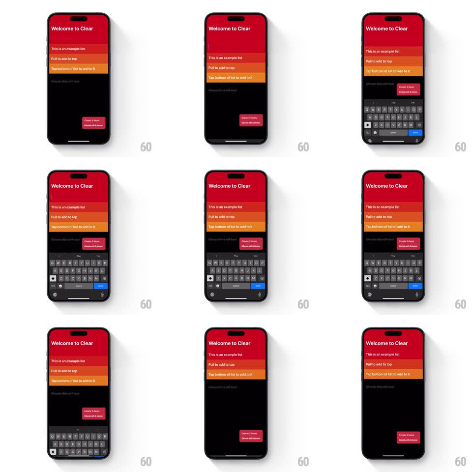

Media
Frame-by-frame

Rebuild this interaction 1:1: Clear's pull-to-add - dragging the list down stretches the heat-gradient rows like rubber, a new blank row in the deepest red emerges at the top, and the keyboard is already up with the cursor blinking.

Rebuild this interaction 1:1: Clear's pull-to-add - dragging the list down stretches the heat-gradient rows like rubber, a new blank row in the deepest red emerges at the top, and the keyboard is already up with the cursor blinking.
## Integration
Integration: stack-agnostic spec - springs given as stiffness/damping, timed motions as duration + curve; map every value to your framework and animation library of choice.
## Scene
Black screen, "Welcome to Clear" header, and a list whose rows run a heat gradient from deep red (top) to orange (bottom) - the tutorial rows ("This is an example list", "Pull to add to top", "Tap bottom of list to add to it").
## Motion spec
Pattern: elastic pull-down with inline row birth.
- Pull down: the whole list translates with the finger but each row lags by its index - the stack visibly stretches, gaps opening between rows as they shear apart (max separation ~24px at full pull).
- Past the threshold (~90px): a new row slot opens at the top in the darkest red of the gradient, all existing rows shift down one color step, and the keyboard slides up (300ms) with focus already in the new row - cursor blinking.
- Release early: the rows spring back together with elastic overshoot (spring ~260/14), gaps snapping shut.
- Type and submit: the new row settles into the gradient, keyboard dismisses, rows relax.
## Calibration
- The shear is the signature: rows move at slightly different rates, never as a rigid block.
- The new row inherits the TOP of the gradient; recoloring cascades down the whole list in one 300ms crossfade.
## Reduced motion
New row fades in at top; no stretch.
## Don't miss
- The keyboard is up BEFORE the pull releases fully - zero dead time between gesture and typing.
- Row text scales a touch with stretch (~2%) so the rubber feel carries into the type.